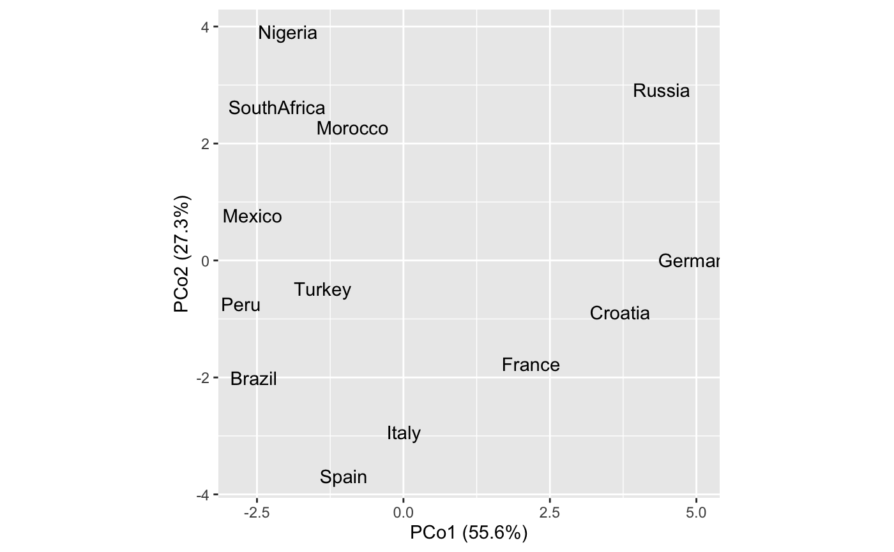
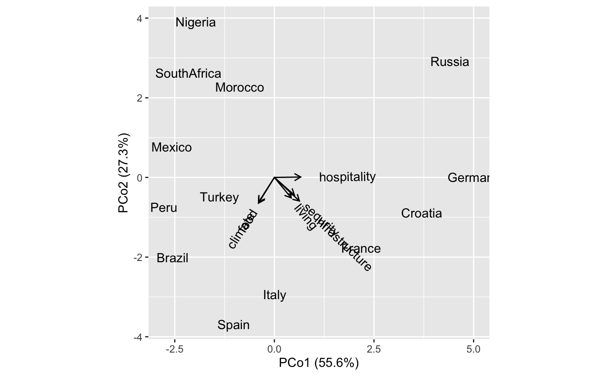
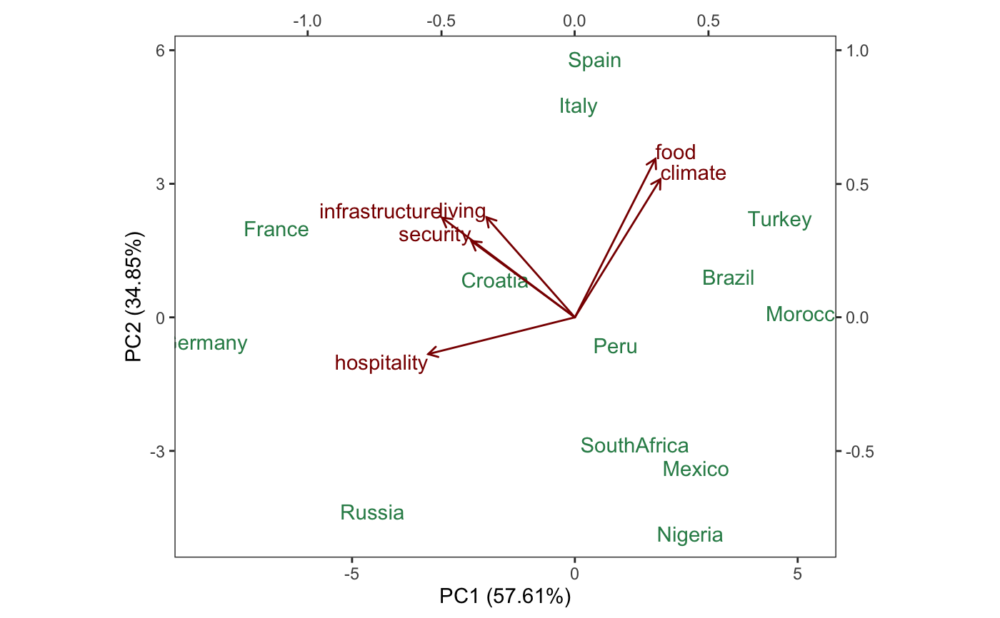
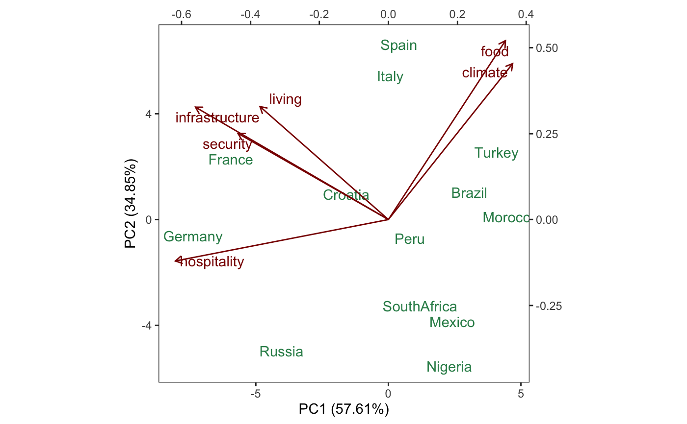

accessors.RdThese functions return information about the matrix factorization underlying an ordination.
recover_u(x) recover_v(x) recover_factor(x, .matrix) # S3 method for default recover_u(x) # S3 method for default recover_v(x) # S3 method for data.frame recover_u(x) # S3 method for data.frame recover_v(x) get_u(x, align = TRUE) get_v(x, align = TRUE) get_factor(x, .matrix, align = TRUE) # S3 method for tbl_ord as.matrix(x, ..., .matrix, align = TRUE) recover_inertia(x) # S3 method for default recover_inertia(x) recover_coord(x) # S3 method for default recover_coord(x) # S3 method for data.frame recover_coord(x) get_coord(x, align = TRUE) # S3 method for tbl_ord dim(x) dim_u(x) dim_v(x) dim_factor(x, .matrix)
| x | A |
|---|---|
| .matrix | A character string matching one of several indicators for one
or both matrices in a matrix decomposition used for ordination. The
standard values are |
| align | Logical; whether to align the matrix factors and coordinates
according to an |
| ... | Additional arguments from |
The recover_*() functions extract one or both of the matrix factors
\(U,V\) that constitute the original ordination. These are interpreted as
the case scores (\(U\)) and the variable loadings (\(V\)). The get_*()
functions optionally (and by default) apply any alignment stored as the
"align" attribute (see alignment). Only the recover_*() functions are
generics that require methods for each ordination class.
get_coord() retrieves the names of the coordinates shared by \(U\) and
\(V\), on which the original data were ordinated, and dim.tbl_ord()
retrieves their number, the rank of the ordination. The outer dimensions of
the matrix decomposition are returned by dim_u() and dim_v().
# Multidimensional scaling of country differences and regression of attributes # Reproduce Exhibit 4.2 in Greenacre (2010) country_differences %>% cmdscale(k = 2) %>% as_tbl_ord() %>% print() -> differences_cmds#> # A tbl_ord of class 'cmds': (13 x 2) x (13 x 2)' #> # 2 coordinates: PCo1 and PCo2 #> # #> # U: [ 13 x 2 | 0 ] #> PCo1 PCo2 | #> | #> 1 0.00781 -2.94 | #> 2 -1.02 -3.68 | #> 3 3.70 -0.883 | #> 4 -2.56 -2.01 | #> 5 4.41 2.91 | #> #> # #> # V: [ 13 x 2 | 0 ] #> PCo1 PCo2 | #> | #> 1 0.00781 -2.94 | #> 2 -1.02 -3.68 | #> 3 3.70 -0.883 | #> 4 -2.56 -2.01 | #> 5 4.41 2.91 | #>differences_plot <- differences_cmds %>% ggbiplot(aes(x = 1, y = 2, label = .name)) + geom_v_text() differences_plot# Reproduce Exhibit 4.5 in Greenacre (2010) lm(country_attributes ~ get_u(differences_cmds)) %>% as_tbl_ord() %>% print() -> attributes_fit#> # A tbl_ord of class 'mlm': (13 x 3) x (6 x 3)' #> # 3 coordinates: (Intercept), PCo1, PCo2 #> # #> # U: [ 13 x 3 | 0 ] #> `(Intercept)` PCo1 PCo2 | #> | #> 1 1 0.00781 -2.94 | #> 2 1 -1.02 -3.68 | #> 3 1 3.70 -0.883 | #> 4 1 -2.56 -2.01 | #> 5 1 4.41 2.91 | #> #> # #> # V: [ 6 x 3 | 0 ] #> `(Intercept)` PCo1 PCo2 | #> | #> 1 5.23 0.423 -0.513 | #> 2 5.69 -0.395 -0.618 | #> 3 6.08 -0.399 -0.645 | #> 4 4. 0.502 -0.444 | #> 5 3.85 0.660 0.0102 | #> 6 4.92 0.627 -0.591 |differences_plot + geom_v_vector(data = attributes_fit) + geom_v_text_radiate(data = attributes_fit, hjust = .3)# Confer PCA weights and inertia between cases and variables country_attributes %>% prcomp() %>% as_tbl_ord() %>% print() -> attributes_pca#> # A tbl_ord of class 'prcomp': (13 x 6) x (6 x 6)' #> # 6 coordinates: PC1, PC2, ..., PC6 #> # #> # U: [ 13 x 6 | 0 ] #> PC1 PC2 PC3 ... | #> | #> 1 0.0796 4.77 0.0922 | #> 2 0.451 5.80 1.30 ... | #> 3 -1.79 0.842 0.0145 | #> 4 3.45 0.906 0.250 | #> 5 -4.54 -4.36 -0.0156 | #> #> # #> # V: [ 6 x 6 | 0 ] #> PC1 PC2 PC3 ... | #> | #> 1 -0.331 0.375 0.00981 | #> 2 0.320 0.517 0.187 | #> 3 0.301 0.593 -0.616 ... | #> 4 -0.387 0.286 0.145 | #> 5 -0.548 -0.138 -0.661 | #> 6 -0.497 0.373 0.357 |# form biplot attributes_pca %>% ggbiplot( aes(label = .name), sec.axes = "v", scale.factor = dim_v(attributes_pca) ) + theme_bw() + theme(panel.grid = element_blank()) + geom_u_text(aes(x = PC1, y = PC2), color = "seagreen") + geom_v_vector(aes(x = PC1, y = PC2), color = "darkred") + geom_v_text( aes(x = PC1, y = PC2), color = "darkred", hjust = "outward", vjust = "outward" )# covariance biplot attributes_pca %>% confer_inertia(0) %>% ggbiplot( aes(label = .name), sec.axes = "u", scale.factor = dim_u(attributes_pca) ) + theme_bw() + theme(panel.grid = element_blank()) + geom_u_text(aes(x = PC1, y = PC2), color = "seagreen") + geom_v_vector(aes(x = PC1, y = PC2), color = "darkred") + geom_v_text_repel(aes(x = PC1, y = PC2), color = "darkred")